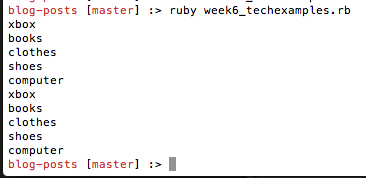
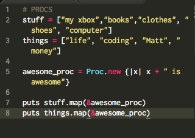
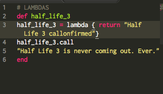
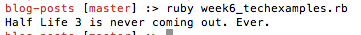

What's up everyone, I'm here to do another technical post. This time, the subject is Blocks, Procs, and Lambdas!
Here, we're gonna talk about Blocks. A block is very simple. It's just a line of code that you execute, usually using a method like .each or .times. I'll put up an example.

As you can see, there's two ways to run a block! Either by putting the code you want to run/iterate through inside brackets, or by starting the block with "do" and finishing it with "end". What's happening inside the block you ask? Each individual element in the array is temporarily considered a variable "x" and then the code is run on that element, and then it starts over with the next element! Simple right? Here's the output of that code for reference.

Now it's time for Procs!
So a proc is like a block, except you can save it as a variable instead of it just being attached to whatever. It's almost like a method, except it doesn't need to be defined and ended in the same way a method is. You can apply it to whatever variables you want. I'll show you how!

Basically, all you have to do to create a proc:
- Define a variable.
- Set it equal to Proc.new
- Attach a block after Proc.new using either brackets or do/end
And voila! You've whipped up a brand new proc!
Here's the output to my example by the way!

One last cool thing about procs. You can call them directly by just using .call! Assuming your proc has something that can be independently called anyway.
Finally, we're gonna talk about Lambdas.
I'm gonna start out with saying: Lambdas ain't all that different from procs. Just like a proc, Lambdas are full-fledged objects like variables, which means they need to be defined, and a block of code needs to be attached to them.
Here's how you make a lambda
- Define a variable.
- Set it equal to lambda {}
- Fill the block with delicious expressions.
BAM. YOU JUST MADE A LAMBDA!
Here's the difference though and I'm gonna use another image to do it.

And here's the output

Here's the thing about lambdas. When they return something, they go back to the method they are a part of. So you could call it inside the method, but if it's not the last thing returned, it won't show up though of course it'll still be executed.. If this was a PROC. Nothing after the Proc is called will be executed at ALL. So I've been led to understand after learning that, that you should use Lambdas when possible instead of Procs. It's up to you.
Well, that's it! A whirlwind tour of Blocks, Procs, and Lambdas! Hope you learned something!
Till next time!
Matthew D. Huff